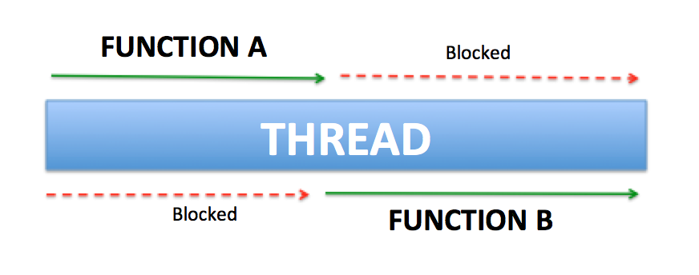
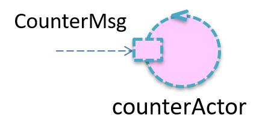

KotlinNotes¶
Kotlin nasce nel 2011, per introdurre un nuovo linguaggio per la JVM, ispirato a Scala, con l’oiettivo di una compilazione più efficiente. Nel 2020 Kotlin è diventato il linguaggio più usato per lo svluppo di applicazioni Android.
Il supporto per la programmazione multipiattaforma è uno dei principali vantaggi di Kotlin (si veda Kotlin Multiplatform ). Riduce il tempo impiegato per scrivere e mantenere lo stesso codice per piattaforme diverse, pur mantenendo la flessibilità ei vantaggi della programmazione nativa.

In rete si trova molto materiale relativo a questo linguaggio, che ne permette uno studio efficace. Riportiamo qui, per comodità, alcuni riferimenti:
Kotlin wikipedia: fornisce notizie storiche e dettagli sul linguaggio
Kotlin org: il sito ufficiale
Kotlin Documentation: presenta il file pdf della documentazione
Get started with Kotlin: il sito con tutto quello che c’è da sapere su Kotlin
Kotlin Basic syntax: panoramica sui costrutti sintattici di Kotlin (parte di Get started with Kotlin)
Kotlin Learning materials: panoramica sulle risorse utili per lo studio di Koltin (parte di Get started with Kotlin)
Kotlin Online: permette di eseguire programmi Kotlin
Alcuni punti-chiave¶
Gli elementi di base di qualsiasi calcolo sono i dati e funzioni (i dati possono anche essere visti come funzioni che restituiscono valori).
Le funzioni sono oggetti di prima classe che hanno un tipo, possono essere assegnati a variabili e usati come argomenti di funzioni o come valori restituiti.
I calcoli richiedono quasi sempre l’uso di Threads e di affrontare problemi di concorrenza, anche in ambienti multi-core .
Chiusure lessicali sono spesso usati come callback in Programmazione asincrona (I/O bound) secondo uno stile di passaggio di continuazione (CPS).
Il modello event-loop a Thread singolo di Node.js (JavaScript) porta all’idea di messaggio/coda di lavoro.
Nel maggio 2019, Google ha annunciato che il linguaggio di programmazione Kotlin è ora il linguaggio preferito dagli sviluppatori di app Android.
The Android OS is single threaded by default, which means operations will run by default on the UI thread except they are explicitly scheduled to run on a background thread. The UI thread is responsible for handling UI updates and executing long running operations on this thread can freeze your app, or crash the app and show an ANR (Application Not Responding) error.
Il concetto Kotlin di coroutine permette di introdurre il Thread in modo molto leggero. Il concetto si basa sull’idea di sospendere un calcolo senza bloccare un thread (Suspending functions) implementato utilizzando (dietro le quinte) una macchina a stati e CPS.
I canali Kotlin promuovono l’interazione tra le coroutine in termini di Stream di dati (flusso di valori).
Gli attori Kotlin promuovono uno stile di programmazione basato sui messaggi che supera la tradizionale interazione a chiamata di procedura, senza perdere in prestazioni.
Koltin per ISS-72939¶
E’ ovvio che la presentazione e lo studio di Kotlin avrebbe bisogno di un congruo numero di ore. In relazione al corso di Ingegneria dei Sitemi software, ci poniamo due obiettivi principali:
comprendere il ruolo degli Attori Kotlin (->web) all’interno della classe ActorBasic.kt
fornire informazioni-base utili per scrivere un CodedQActor in Kotlin e frasi Kotlin all’interno dei modelli eseguibili QAk.
Il file LabIntroductionToKotlin.html¶
Il file LabIntroductionToKotlin (html) contiene una introduzione a Kotlin condotta attraverso esempi, tenendo conto di un percorso logico che distingue (al solito) una parte relativa alla organizzazione strutturale dei programmi, una parte relativa alla esecuzione (concorrente) di attività e una parte relativa alla interazione tra attività.
Indice del file:
Le parti marcate con in ! contegono anche spiegazioni utili. |
|
Il file demo2022.kt¶
Il file demo2022.kt ed altri files del progetto it.unibo.kotlinintro contengono esempi attivabili selezionando un indice.
Esempi in demo2022.kt 1:demoBaseFunzioni (sintassi base)
2:demoLambda
3:demoCps
4:demoAsynchCps
5:runBlockThread
6:runBlockThreadInGlobalScope
7:runBlockingLaunchJoin
8:runBlockingLaunchNoJoin
9:scopeDemo
10:runInNewScope
11:manyThreads
12:manyCoroutines
13:scopeAsyncDemo
14:ioBoundFunCallBlocking
15:ioBoundFunCallnewSingleThreadContext
16:ioBoundFunCallActivate
|
Esempi in altri files: 17:demoChannelTestOneSendRec //kotlindemo/demoChannels.kt
18:demoChannelTestMany //kotlindemo/demoChannels.kt
19:manyTypeProducerOnChannel //prodCons/prodConsKotlin.kt
20:manyConsumers //prodCons/prodConsKotlin.kt
21:actorsSenderReceiver //kotlindemo/demoActors.kt
22:doCounterActor //kotlindemo/demoActors.kt
|
Dati e tipi di dato¶
Kotlin intende promuovere l’idea della Programmazione funzionale (->web), per cui Le funzioni sono gli elementi di base di qualsiasi computazione (si veda Data, Types and Variables (html) ).
Un dato è concettualmente un valore prodotto da una funzione, il cui tipo viene inferito
var, val, Type, Any, Unit, NullaleType, Smart/Explicit cast (as operator), ==, ===, Range, ArrayOf, Property
Oggetti e classi¶
Kotlin supporta Object Oriented Programming (OOP) e fornisce funzionalità come astrazione, incapsulamento, ereditarietà ma in modo diverso da Java (si veda Classes and Objects in Kotlin html).
SingleCounterPersonPersonILLExprPersonCoStudentDelegateColorKotlin Object (->html)
SingleCounterKotlin Class (->html)
PersonAbout initializazion (->html)
PersonILL, lateinit, lazySealed clsss (->html)
ExprCompanion object (->html)
PersonCoInheritance (->html)
StudentProperty delegation (->html)
Delegate, see Delegated properties (->web)Enum classes (->html)
Color, see Enum class (->web)
Per esempi su classi ed oggetti in Kotlin, si veda anche: demoOOP2022.kt.
Le funzioni¶
Le funzioni sono oggetti di prima classe che hanno un tipo, possono essere assegnati a variabili e usati come argomenti di funzioni o come valori di ritorno.
TOPICS: Top-level fun, One-line fun, FunctionType, Lambda Exp Literal, Anonymous fun (si veda Functions html ) |
|
TOPICS: Lambda syntax shortcut, Function reference, let, run, it (si veda Using Lambda html) |
Una lettura interessante: Inline Functions:
In this tutorial, first we’re going to enumerate two seemingly unrelated issues about lambdas and generics and then, after introducing Inline Functions (->web), we’ll see how they can address both of those concerns.
CPS¶
Continuation-passing style ->web (CPS) è uno stile di programmazione in cui il controllo viene passato esplicitamente sotto forma di Continuation (->web) (una struttura dati che rappresenta il processo computazionale in un dato punto dell’esecuzione del processo).
TOPICS: Lexical Closures, Callbacks, Continuation Passing Style (CPS) (si veda Closures, Callbacks and CPS html) |
Percorso funzioni-cps-coroutines-canali-attori¶
Kotlin promuove l’idea di funzioni come oggetti di prima classe (demoFun.kt, demoForLambda.kt) e lo stile CPS di programmazione (demoForCps.kt), che viene spesso usato per definire callbacks (demoForCpsAsynch.kt) da eseguire al temine di operazioni asincrone.
Per superare i problemi connessi all’uso delle callback, Kotlin introduce il meccansimo delle coroutines (demoCoroutinesIntro.kt), con gli associati concetti di dispatcher e scope (demoDispatchers.kt, scopeDemo).
Kotlin fornisce meccansimi per il Lancio di coroutines e per la sospensione di una coroutine (demoSuspended.kt, demoSequences.kt). che risulta poco costoso in quanto non implica un cambio di contesto tra Thread.
Lo scambio di informazione tra coroutine viene supportato da I canali.
I Kotlin actor sono oggetti computazionali che incapsulano un canale e promuovono uno stile di programmazione basato su componenti logicamenti attivi e indipendenti che operano in una unica JVM scambiando messaggi.
La parte concorrente¶
Il runtime Kotlin/Native non incoraggia un classico modello di concorrenza orientato ai thread con blocchi di codice che si escludono a vicenda e variabili condizionali, poiché questo modello è noto per essere soggetto a errori e inaffidabile.
Il runtime Kotlin/Native offre il concetto di Kotlin Worker (->web): flussi di controllo eseguiti contemporaneamente con una coda di richiesta associata. I Worker sono molto simili agli attori nell’Actor Model (->web).
un Kotlin Worker (->web) può scambiare oggetti Kotlin con un altro Worker. L’oggetto o è immutabile o, se modificabile, è proprietà di un singolo Worker, in modo da garantire un singolo mutator ed evitare locking. La proprietà può essere trasferita. Si veda anche Kotlin Concurrency overview (->web).
Le Chiusure lessicali (->web) sono spesso usati come callbacks in programmi con asincronismo I/O bound (->web), in accordo allo stile di programmazione CPS (Continuation-passing style ->web) .
Asynch¶
TOPICS: CPS in Asynchronous programming: kotlin.concurrent.thread, Single Abstract Method conversion (SAM) (si veda Towards Asynchronous Programming html) |
SAM¶
Una interfaccia SAM (Single Abstract Method) è un’interfaccia con un solo metodo astratto.
Con una conversione SAM, Kotlin può convertire qualsiasi espressione lambda la cui firma corrisponda alla firma del singolo metodo dell’interfaccia nel codice che istanzia dinamicamente l’implementazione dell’interfaccia.
Le coroutines¶
Per dare supporto alla programmazione asincrona (o non bloccante), evitando il noto callback hell (si veda Asynchronous I/O ->web), Kotlin introduce il meccanismo delle coroutines.
All’interno di una coroutine, la sequenza di elaborazione può essere sospesa e ripresa successivamente.
A coroutine can invoke other functions; it can also suspend its behavior (without blocking its running thread).

Una coroutine (si veda Introduction to coroutines html) è una istanza di calcolo sospendibile non vincolata a a nessun thread particolare. Può sospendere la sua esecuzione in un thread e riprendere in un altro.
Coroutine: contesti e dispatchers¶
Le coroutine vengono sempre eseguite in un contesto rappresentato da un valore del tipo CoroutineContext, definito nella libreria standard di Kotlin (si veda Coroutine context and dispatchers ->web e DemystifyingKotlinDispatchers ->web.)
Il contesto di coroutine è un insieme di vari elementi tra cui:
il Job della coroutine: un oggetto (cancellabile) che rappresenta il lavoro della coritine, creato con l’operazione Launch.
uno dei possibili Dispatchers (html) che determina quale thread o threads la coroutine usa per la sua esecuzione.
TOPICS: Dispatchers.Default, Dispatchers.IO, newSingleThreadContext, Dispatchers.Unconfined (si veda Dispatchers html)
Confinamento¶
Il dispatcher di coroutine può confinare l’esecuzione di coroutine a un thread specifico, inviarlo a un pool di thread o lasciarla unconfined.
Lancio di coroutines¶
Launch¶
L’operazione Launch avvia una nuova coroutine senza bloccare il thread corrente e restituisce un riferimento alla coroutine come Job.
TOPICS: GlocalScope, CoroutineScope, Launch, Join, runBlocking, Dispatchers, manyThreads, manyCoroutines, await
runBlocking¶
expect fun <T> runBlocking(
context: CoroutineContext = EmptyCoroutineContext,
block: suspend CoroutineScope.() -> T
): T
Queta operazione esegue una nuova coroutine e blocca il thread corrente fino al suo completamento. La funzione è progettata per collegare il normale codice di blocco alle librerie scritte in stile di sospensione, da utilizzare nai main e nei test; non dovrebbe essere utilizzata da una coroutine.
expect è una dichiarazione cui dovrebbe corrispondere una versione platform-specific (qualificata come actual; si veda ad esempio https://infinum.com/blog/kotlin-multiplatform-overview/.
Sospensione di coroutine¶
Il concetto di coroutine si basa sull’idea di sospendere un calcolo senza bloccare un thread (si veda suspend function in Coroutines basics ->web) implementato utilizzando (dietro le quinte) una macchina a stati e CPS .
Il concetto è quello di dividere il codice in una sorta di macchina a stati che esegue le operazioni e poi viene messa in stato di attesa prima di poter essere nuovamente richiamata.

Le coroutines non sono parte del linguaggio e nemmeno della libreria standard; fanno parte di una libreria separata.
Uaando tecniche di compilazione, La libreria inserisce le parti rilevanti del codice all’interno di callback, subscrive o eventi e schedula l’esecuzione del programma (su thread differenti), lasciando il codice semplice come se fosse eseguito sequenzialmente.
Non `e quindi necessario il supporto di virtual machine o sistemi operativi.
Suspending functions¶
Una funzione di sospensione è una normale funzione di Kotlin con l’aggiunta del modificatore suspend che indica che la funzione può sospendere l’esecuzione di una coroutine.
Le suspending function possono richiamare qualsiasi altra funzione regolare, ma per sospendere effettivamente l’esecuzione, questa deve essere un’altra funzione di sospensione.
Delay,async coroutine builder (si veda Sospensione di coroutine html) |
|
TOPICS: Sequences, Suspendable sequences (yield) ` |
La parte interazione¶
I Deferred values (->web) forniscono un modo conveniente per trasferire un singolo valore tra coroutine.
I Canali Kotlin (->web) forniscono un modo per trasferire un flusso di valori (uno stream).
Un attore Kotlin è una combinazione di una coroutine, lo stato in essa incapsulato/confinato e un canale per comunicare con altre coroutine.
I canali¶
Interaction among concurrent activities (coroutines) can be supported by channels that provide suspensive send/receive operations.

Combining a coroutine with a channel to communicate with other coroutines makes the idea of Kotlin actor.
Un KotlinChannel (->web) è concettualmente molto simile a una BlockingQueue.
Una differenza fondamentale è che invece di un’operazione di put bloccante ha una
suspending send e invece di un’operazione di take bloccante ha una
suspending receive.
I canali sono utilizzati per fornire e consumare oggetti, con una strategia FIFO.
Channel<Int> (si veda Kotlin channels html) Utile anche per Dispatchers
ReceiveChannel<Int> (si veda Producers-consumers in Kotlin html)
ManyType producer (si veda Producers-consumers in Kotlin html)
Many consumers (si veda Producers-consumers in Kotlin html)
ReceiveChannel¶
I canali implementano le interfacce SendChannel and ReceiveChannel.
Dunque un produttore si può pensare come un oggetto computazionale che implementa una ReceiveChannel interface in modo che un
consumatore che possiede un riferimento al produttore possa eseguire una receive().
Per un esempio, si veda
Altri esempi:
ManyType producer (si veda Producers-consumers in Kotlin html) |
|
Many consumers (si veda Producers-consumers in Kotlin html) |
SendChannel¶
Un consumatore si può pensare come un oggetto computazionale che implementa una SendChannel interface in modo che un
produttore che possiede un riferimento al produttore possa eseguire una send().
Per un esempio, si veda
SendChannel<Int> (si veda Producers-consumers in Kotlin)
Kotlin actor¶
Un attore Kotlin è un oggetto computazionale che implementa una SendChannel che incapsula una variabile channel (mailbox)
per rendere più conveniente l’uso della receive().
scope.actor<String> {
var msg = channel.receive()
...
for (v in channel) {
// Process Messages
when (v) {
...
}
}
Gli Attori Kotlin (->web) promuovono uno stile di programmazione basato su messaggi che supera la tradizionale interazione di chiamata di procedura senza perdere in prestazioni.
(si veda Kotlin Actors html)

(si veda actorcounter html)

ActorBasic.kt incapsula un attore¶
Si dovrebbe ora comprendere come la classe ActorBasic.kt realizzi in modo efficiente il concetto di un ente computazionale dotato di flusso di controllo autonomo, capace di recevere e gestire messaggi in modo FIFO, sfruttando un attore Kotlin incapsulato:

{kind=link}
{kind=link}
Per approfindimenti, si veda: ActorBasic: il funzionamento in QakActors23.